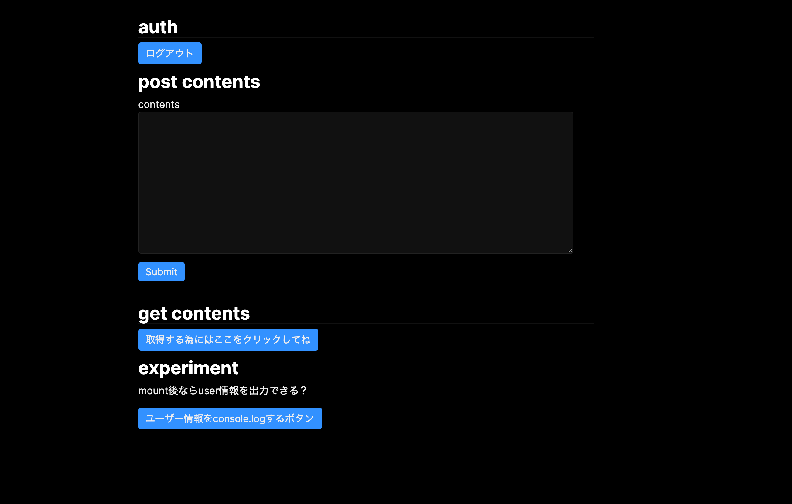

「Firebase は安いし楽だしマジ最高」という一心で技術選定してしまったプロダクトが成功して見えてきた課題、割高なコスト・権限管理・カスタマイズ性、そして （特性やスキルセット的に）RDB 製品が適していたのに無理やり Firestore を採用したことによるデータ不整合。 その結果チーム内で Firebase を抜ける機運が高まるも、Firebase べっとりなアプリケーションすぎて移行しづらいといった問題に出会うかもしれません。 そのような場合に備え、Firebase の存在を隠蔽して開発することに挑戦してみましょう。
注意: Firebase を剥がしているときに「俺、次は絶対そうするわ」と感じたものを書いているだけであり、まだ実際にはこのパターンでプロダクション導入していません。
あくまで個人開発で試してみていけそうと思ったので、提案しますという体です。
また Firebase を隠蔽しないコードを否定するわけではないですのであしからず、高速道路の右と左どっちを走るかという話だと思っています。
なのでこの記事はあくまで右車線でイケイケどんどんしすぎた事故を処理した話です。（※右は速度重視、左は安全重視という意味です。右車線を走っても法律を守れば安全と個人的には思います。））
またコード例は React ですが、hooks 以外は他の FW でも当てはまるお話ですので適宜読み飛ばしていただくと参考になると思います。
なぜ隠蔽するか
Firebase という mBaaS はフルマネージドなサービスで、インフラの保守コストを下げてくれます。 さらに easy なインターフェースを持つことから開発速度を出しやすく、 Firebase は予算的なリソースや人的なリソースが潤沢でないチームにとって魅力的なものです。
たとえば データの永続化、オブジェクトストレージ、認証機能をバックエンドの構築なしで無料で利用でき、また CloudFunctions を使えばバックエンドサービスも作れます。（これは有料）
ただ、その分設定の自由度が低かったり癖があったりもするので、サービスが成功して予算に余裕が出てきたり、さらなる拡大をしていこうとすると Firebase を抜けたいねという話になったりもします。Firebase はクライアントに対して SDK を提供していますが、いざ移行というときにコードが SDK からさまざまな機能を直接叩いてしまうと、離脱するときの修正の影響範囲が広くなってしまい抜け出し辛くなります。
関心の分離による Firebase の隠蔽を試みる
そこで将来の移行を考慮して意識しておきたい考え方は 関心の分離 です。 アーキテクチャー上の要素をその責任で分離し、Firebase といったインフラ基盤に該当するものはアプリケーションに対するプラグインとみなして他の基盤に移れるように設計できればとても嬉しいです。
この分離を React アプリケーションに取り込む為に、特定のインフラといった詳細をプラグインとして差し込める依存性の注入(DI)を採用したいですが、それをやろうとするとクラスベースでのインターフェース設計が必要になり、明示的な DI を行わない React での開発方法にも反してしまいます。 もちろん、Context などで Repository へのアクセスができる Usecase/Service 層 を UI に流し込んで、Constructor Injection に頼らない擬似的な DI も可能ですが、React の慣習からすれば本流ではないやり方です。
そこで DI は考えずにただ依存を分離することを考えようと思います。 「依存とはモジュールが他のモジュールの存在を知っていること」という考えで、「UI 層に Firebase という文字を出さない」といった設計を目指していきます。
つまり、pages/, components/, containers/ などで
import firebase from 'firebase'を書かない- Firebase という文字が入った型も受け取らない
という制約を課します。
永続化層とやりとりする関数を一つのファイルもしくはフォルダにまとめる
Firestore/CloudStorage とやりとりする関数を Repository 層的なものに押し付けていきます。 そうすることで UI 層から直接永続化層にアクセスすることを防ぎ、Firebase の存在を隠蔽します。
import firebase from "firebase"
export default {
getAllPosts() {
firebase
.firestore()
.collection("post")
.get()
.then(d => d.data())
.catch(e => {
console.error(e)
})
},
}
useEffect(() => {
Repository.getAllPosts().then(d => {
setAllPosts(d)
})
}, [])
こうすることで UI 層(pages/index.tsx)は firestore/cloud storage の存在を知ることなくデータを取得できます。
もし何かに移行する場合はこの repositories/post.ts まるごと入れ替えます。 たとえば firestore でなく API からその値が帰ってくるようになれば、repositories/post.ts 内の同じ関数に、同じ型の返り値が帰ってくるように API 経由で fetch できるコードを書くだけで移行が済みます。
(これに関しては inteface を使ったり(Repository 層が実装する interface を props の型定義に混ぜておく)、Repository を Root から Context 経由で Injection すればもっと硬いコードが書けそうとは思ったのですが、流石にそこまでしなくても大丈夫かなーと思って緩めました。)
react-firebase-hooks は諦める
Firebase と React の組み合わせ経験がある方は react-firebase-hooks をご存知でしょう。 これは auth/firestore/realtime database/cloud storage に対するアクセスを簡単にしてくれる hooks で、主にデータ取得とそのキャッシュ(状態管理)、さらにリアルタイムでの更新(データを書き込むとそれを即座に反映させる)ができます。
とても便利な hooks なので react-firebase-hooks/firestore を採用したくなるのですが、firebase との依存を断ち切るためにこの hooks の利用は諦めます。
react-firebase-hooks/firestore は、
const [userData, userDataLoading] = useCollection(
firebase.firestore().collection("user"),
{
snapshotListenOptions: { includeMetadataChanges: true },
}
)
といったコードを書きます。
hooks の呼び出しはその特性上必ず 関数コンポーネントのトップレベルで行わないといけないので、必ず UI 層に firestore の情報が出てきてしまいます。
ここでは collection("user") という firestore のコレクション名が見えており、この UI は firestore の詳細を知ってしまっています。
つまり firebase に依存したコンポーネントになります。
「依存とはモジュールが他のモジュールの存在を知っていること」という考えのもとではこの firebase や firestore という文字が出てきてしまった時点で NG🙅♂️ です 😭
そのため react-firebase-hooks/firestore の利用は諦めます。
realtime 処理そのものも諦めた方が良いかも？
react-firebase-hooks/firestore を使わない場合、同様のリアルタイムの更新処理は直接 firestore の SDK が提供している onSnapshot が使えます。
参考資料: Cloud Firestore でリアルタイム アップデートを入手する
db.collection("cities")
.doc("SF")
.onSnapshot(function (doc) {
console.log("Current data: ", doc.data())
})
としておけば、onSnapshot のコールバック関数ブロックでは、コンテンツが変更されるたびに、ドキュメントスナップショットを取得できます。
そのため react-firebase-hooks/firestore を使わず、この関数を repository 層に置いておいて、それにコールバック関数を渡せば一応は UI から firestore の存在自体は隠蔽できます。
しかし、本当にやるべきかは要検討です。 もし firebase から移行するときにこの機能が本当に使えるのでしょうか。 バックエンドが保持している値/DB での値の変更を検知してクライアントを書き換える機能を実現できるバックエンドが移行時に作られるかと言うと、実装コストがかかるので優先度は低くなるだろうなと思っています。 なので 将来の移行を予想しておくならばそもそもリアルタイムでの更新処理は使わない方が無難だと思います。
ただしどうしても Read の速度を縮めたい、再取得する処理書くのめんどくさい、 移行のときに責任を持てる と言う場合は Repository に onSnapshot を押し込んだ上であれば使っても良いかなぁとは思います。
Firebase Client を生成する Singleton クラスを作る
Firebase を使う為にはアプリケーション内で 初期設定をする必要があります。 例えばこのようなものです。
firebase.initializeApp({
apiKey: "XXXXXXX",
authDomain: "XXXXXXX",
databaseURL: "XXXXXXX",
projectId: "XXXXXXX",
storageBucket: "XXXXXXX",
messagingSenderId: "XXXXXXX",
appId: "XXXXXXX",
})
こういった初期設定をし、いつでもどこでも Firebase を呼び出せるようにします。 これを直接宣言してもいいのですが、そうはできない理由があります。
こういった初期設定はアプリケーションが必ずファイルに書く必要がある・もしくは必ず呼び出す必要があるものです。 たとえば JS ファイルのルートに書いたり、NextJS でいう _app.tsx のような共通ファイルに書いたりします。
ただそこで冷静に考えたいのは、Firebase の初期設定をルートに埋め込むと言うことは、アプリケーションそれ自体が Firebase そのものの存在を知ってしまいます。 移行したときにもその移行先でそういった初期化コードが必要なら埋め込むべきだとは思いますが、おそらくはそうはならないので(API ベースで fetch するだけで済むはずなので)、そういった詳細はアプリから隠してしまいましょう。
そこで Infra 層を作りそこで Firebase の初期化をしてします。
export default class Firebase {
private static _instance: Firebase
private _db: firebase.firestore.Firestore
private _auth: firebase.auth.Auth
private constructor() {
firebase.initializeApp({
apiKey: "XXXXXXX",
authDomain: "XXXXXXX",
databaseURL: "XXXXXXX",
projectId: "XXXXXXX",
storageBucket: "XXXXXXX",
messagingSenderId: "XXXXXXX",
appId: "XXXXXXX",
})
this._db = firebase.firestore()
this._auth = firebase.auth()
}
public static get instance(): Firebase {
if (!this._instance) {
this._instance = new Firebase()
}
return this._instance
}
public get db() {
if (this._db) {
return this._db
} else {
this._db = firebase.firestore()
return this._db
}
}
public get auth() {
if (this._auth) {
return this._auth
} else {
this._auth = firebase.auth()
return this._auth
}
}
}
さて、このコードは constructor は隠蔽されシングルトンになっています。 どうしてこのようなことをしているかと言うと、このコードを永続化層から直接呼ぶからです。 つまりアプリケーション側で初期設定を呼び出さず、永続化層から呼び出します。 シングルトンなので、インスタンスがなければインスタンスが作られて初期化されるし、二回目からは設定済みの Firebase クライアントを手に入れることができます。 つまり明示的な初期化をしなくても infra 層を呼ぶだけで初期化をすることができます。
またこの方式の良いところは複数回初期化に対する防御コードを書く必要がありません。 たとえば、初期化するポイントを明示的に指定しないと言うことはあらゆるところで初期化される恐れがあり、また明示的に指定しても React の書き方次第では再レンダリングの影響で再初期化がされるということもあります。 それに対しては
if (!firebase.apps.length) {
firebase.initializeApp({
apiKey: "XXXXXXX",
authDomain: "XXXXXXX",
databaseURL: "XXXXXXX",
projectId: "XXXXXXX",
storageBucket: "XXXXXXX",
messagingSenderId: "XXXXXXX",
appId: "XXXXXXX",
})
}
として防御する方法がありますが、これをやらなくて済みます。 これはすでに初期化されていない場合のみ初期化するというコードで、詳しくはこの Issue にまとまっています。 Firebase をシングルトンにしてしまって必ず初期化が一回しかされないことにしてしまえばこのような防御的コードは書かなくて済みます。（と思ってます！）
認証用の store を使う
firebase では認証後、firebase.auth().currentUser で認証したユーザーの情報を取得できます。 この値が null かどうかでログインしているかの判定にも使えるのでこのユーザー情報は非常に大切なものです。
特にアプリケーションにおいてはログイン管理は大切なので、これはクライアントサイドでそのセッション中は保持しておきたい情報です。 そこで Redux や useReducer といったものに保持、Context で全ページに配信するとよいです。
そこで login 後に user 情報を取得しそれを Context 経由で UI に配信してみましょう。 全ページ共有で使う Context なので_app.tsx から配信します。 export する Context は、呼び出し側で useContext され中にある値や関数が使われることを想定し、userId とその userId をセットする関数を入れておきます。
import { AppProps } from "next/app"
import "firebase/auth"
import { useState, createContext, Dispatch, SetStateAction } from "react"
export const AuthContext = createContext<{
uid: string | null
setUid: Dispatch<SetStateAction<string>>
}>(null)
const App = ({ Component, pageProps }: AppProps) => {
const [uid, setUid] = useState<string | null>(null)
return (
<AuthContext.Provider value={{ uid, setUid }}>
<Component {...pageProps} />
</AuthContext.Provider>
)
}
export default App
さてその認証情報の取得に使う関数なのですが、firebase.auth().currentUser は使いません。
ここ落とし穴になってるので注意しましょう。
これは firebase の SDK の初期化タイミング次第では null が入っているからです。
これを useEffect(()=>{}, []) の中で読んでしまうと ユーザー情報が null のままアプリケーションが開始されてしまってログイン後ページの UI を表示させることができません。
そこで auth.onAuthStateChanged というメソッドを使います。
これは
checkAlreadyLogin: ({
successHandle,
noUserHandle,
}: {
successHandle: (userId: string) => void;
noUserHandle: () => void;
}): void => {
Firebase.instance.auth.onAuthStateChanged((user) => {
if (user) {
successHandle(user.uid);
} else {
noUserHandle();
}
});
},
として使え、さらに user を監視しておりそこに変化があったときに実行される関数なので nonNull な user として扱えます。 ここでコールバック関数を実行すればそのユーザーに対して何かアクションすることができます。(提供されてる API が Promise を返していない設計なのでコールバックをここで実行しています。) この関数も firebase との境界なので Repository 置き場に置いておきます。(上の例だと repository/session.ts と言う場所に置いた。)
これを UI 側から呼び出すことでログイン情報を context にセットできます。
import * as React from "react"
import { SessionRepository } from "../repository/session"
import { AuthContext } from "./_app"
export default () => {
const auth = React.useContext(AuthContext)
const [content, setContent] = React.useState("")
React.useEffect(() => {
SessionRepository.checkAlreadyLogin({
successHandle: (userId: string) => {
auth.setUid(userId)
},
noUserHandle: () => {
auth.setUid(null)
},
})
}, [])
return (
<div>
<h2>auth</h2>
{auth.uid ? (
<div>
<p> userId: ${auth.uid}</p>
</div>
) : (
<button
onClick={async () => {
const userId = await SessionRepository.loginAnonymous()
}}
>
匿名ログイン
</button>
)}
</div>
)
}
react-firebase-hook/auth で解決できるが・・・
ちなみにここで書いた user の監視問題は react-firebase-hook/auth を使えば鮮やかに解決できたりもします。
import { useAuthState } from "react-firebase-hooks/auth"
const login = () => {
firebase.auth().signInWithEmailAndPassword("test@test.com", "password")
}
const logout = () => {
firebase.auth().signOut()
}
const CurrentUser = () => {
const [user, loading, error] = useAuthState(firebase.auth())
if (loading) {
return (
<div>
<p>Initialising User...</p>
</div>
)
}
if (error) {
return (
<div>
<p>Error: {error}</p>
</div>
)
}
if (user) {
return (
<div>
<p>Current User: {user.email}</p>
<button onClick={logout}>Log out</button>
</div>
)
}
return <button onClick={login}>Log in</button>
}
ここでは user の値は動的に裏側でよしなにセットされるため、自分でセットする必要はありません。 そのため null をセットすると言ったことは避けられる便利な hooks です。
しかし見てお気づきの通り、hooks を使う場面で firebase.auth() として firebase という文字が見えてしまっています。つまりこのコンポーネントは firebase に依存してしまっています。
つまり firebase に依存したコンポーネントになります。
firebase を剥がす時が大変なので auth hooks も利用は控えておきましょう。
SSR への対応
先ほどは認証情報をなんらかの store に保存し、それを Context を配信していました。 state や store を配信すると、SSR 前提のアプリであれば routing 時にその情報が吹っ飛んでしまいます。 そのため私は routing ごとに認証情報を再取得しています。 無駄な気もするのですが認証情報が最新であることは良いことでもあるのでそうしています。
それをやっているのが先に出したコードの useEffect の部分です。 認証が必要なページにこれを書いておけば、そのページに来るたびに useEffect が呼ばれ認証が済んでるかチェック、そしてチェックされていたらユーザー情報を store に保存します。
React.useEffect(() => {
SessionRepository.checkAlreadyLogin({
successHandle: (userId: string) => {
auth.setUid(userId)
},
noUserHandle: () => {
auth.setUid(null)
},
})
}, [])
(TIPS: ブラウザ備え付けのストレージで user 情報を永続化してしまえば SSR しても user 情報を保てるし、store として Redux を選択していれば middleware で自動的に store <=> browser で sync できるのでこの手の問題は考えなくても済んだりする。しかも認証情報ではなくユーザー情報(ここでは userID のみ)を保存するのでセキュリティ的にも大丈夫です。)
型推論でも firebase.User を使わない
さて先の TIPS で「しかも認証情報ではなくユーザー情報(ここでは userID のみ)を保存するのでセキュリティ的にも大丈夫です。」と書きましたが、ユーザー情報ではなくユーザー ID だけを受け取っています。
上のコールバック関数は successHandle(user.uid); となっています。
user そのものの情報(firebase.User)を使っていません。
これは コールバック関数を登録した呼び出し元から firebase の存在を隠蔽するためです。
ここで user をそのまま渡してしまうと、firebase.User という firebase 特有のオブジェクトが UI へと渡ってしまいます。
そうなるとそこにある特殊な関数をアプリケーション側で呼び出されてしまうと剥がすのが大変なので、ここでは userId だけを保持することとします。
firestore は userId さえあれば rule を使った認証や user 情報に対する参照を埋め込めるので(userId や userId を基に取得した user 情報が外部キーになるので)、userId さえ認証後の identity として持っておけば大丈夫です。
もちろん退会処理currentUser.delete()のようなコードは user 情報そのものが必要になりますが、こういう処理をしたい場合はその都度 respositories/session.ts の中で currentUser(firebase.User 型のオブジェクト)を作り、delete()メソッドを呼び出すと良いです。
このメソッドはイベントをトリガーに呼び出すため初期化が済んだ後に呼ばれるので null であることはないはずです。
deleteUser: () => {
Firebase.instance.auth.currentUser.delete()
},
利用ケースが想像できないのですが(TIPS: user 情報をどう使うかといった例は 公式 Docにまとまっている)、もしアプリの初期化のタイミングで認証ユーザー情報そのものが欲しいと言う場合は、先に 述べた onAuthStateChanged を使って user 情報を取得しましょう。
おわりに
正直めんどくさいし便利な hooks を使いたいんだが（特に認証）
そうです。 めんどくさいです。 剥がしたときのクッションをわざわざ挟んでいるからめんどくさくなるのは当然です。
「開発スピードを出したくて Firebase を使ってるのにそんなガチガチに固め出したらその強みが薄まるじゃん」という批判もあるでしょう。 「また Firebase で実用に耐えれてるうちは一気にインフラ入れ替えても移行できそうだし、全部作り替えるようなイメージでいまドカンと作ってしまっても大丈夫そう」と思うかもしれません。
おっしゃる通りです、それは痛いほど分かります。 なので分離を強制したいわけではないですが、とはいえ剥がす可能性も考え firebase に依存したコードを書く前に依存を分離を一度考えてみる価値はあると思っています。 不便を感じてから firebase べっとりコードを書くことへの移行もできるので、一度 firebase に依存しないコードで挑戦してみて段階的に firebase 依存のコードを増やしていっても良いでしょう。
user 情報を持ち回らないことの懸念
やはり userId だけでなく、firebase.User を持ち回りたい気持ちはあります。 今のところ持ち回らなくても困っていませんが、currentUser が持つメソッドを見ると、これを初期化時に呼び出すこともあるのではないかなと不安になってきます。
react-firebase-hooks/auth を使えば null じゃない Firebase.User をシンプルな方法で確実に入手できる保証があるので、正直なところ「良いなぁ」っていう気持ちはあります。 いまは userId だけを持ち回る方式で困っていないので代案は考えていませんが、もしかしたらこの制約は緩める時が来るのかもなとは思ってます。 (完全に Firebase を隠蔽しなくてもちょっとくらいだったら依存してもいいかなとも思っています。現実世界では移行するための時間やテスト工数もあるはずなので。)
sample code
sample プロジェクトはこちらです。

(注)
- firestore の collection 名 'user' と 'post' 配下に R/W 権限を振ってます。
- 無料枠を使い潰すと止まります。
- 予告なく停止しますので、試したい方は自分の firebase プロジェクトを使ってお試しください。